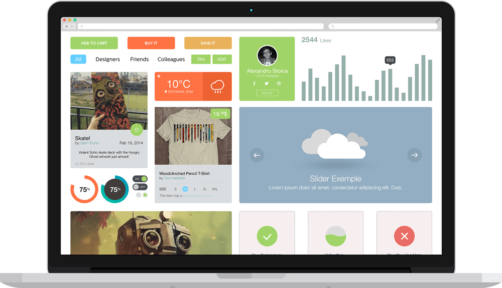

Launch - Startup Landing Page
Documentation
- by: Pixininja
- csmthemes.com/themes/launch/
Which code editor for editing files?
http://brackets.io/
How to change logo?
How to change Background image?
To change the image go to img folder and replace bg.jpg, bg-pricing.jpg and bg-video-preview.jpg
Tip: Use https://tinypng.com/ to compress your images.
How to change Background video?
http://www.mirovideoconverter.com/
Open the video folder and replace the poster.jpg with a image which is the first frame of the video or with the image of your choice.
How to change Feature image?

Important: Feature image sould be 1000x575 for things to work properly
Note: You have to do the step below only if the image dosen't fit properly.
If you want to use any other image size and the image doesen't fit properly you need to change a few numbers to adjust the image properly.
Open main.css which can be found inside css folder. Go to line no 965, you will need to make the changes here
.features img {
max-width: none;
position: absolute;
width: 900px;
top: 0;
left: 22px;
}
Change width: 900px; and left: 22px;. This represents the two image on the right. Width is for the image's width and left the position left property. max-width: none; makes the image stretch to its full width.
.features div[class="row"]:nth-child(2) .col-md-7 img { left: -277px; }
Change left: -277px;. This represents the image on the left. Left is the position left property.
How to Edit the counter?
How to Edit the map?
How to integrate your mailchimp to subscribe form?
Watch Video Tutorial
How to change Twitter feed?
Step 1
Step 2


// Consumer Key
define('CONSUMER_KEY', 'CONSUMER_KEY_HERE');
define('CONSUMER_SECRET', 'CONSUMER_SECRET_HERE');
// User Access Token
define('ACCESS_TOKEN', 'ACCESS_TOKEN_HERE');
define('ACCESS_SECRET', 'ACCESS_SECRET_HERE');